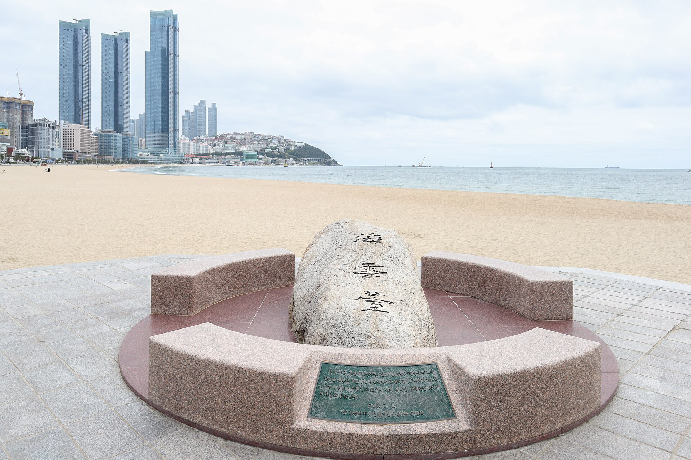

A BITE. A VIEW. A BUSAN DAY.
한 입 먹고,
부산에 빠지다.
맛있는 한 끼 옆에는, 오래 기억할 풍경이 있으니까.
오늘은 해운대에서 동백섬까지 걸어 봅니다.

맛있는 한 끼 옆에는, 오래 기억할 풍경이 있으니까.
오늘은 해운대에서 동백섬까지 걸어 봅니다.
식사와 산책을 한 코스로.
마음에 드는 동네부터 시작해 보세요.
복국 한 그릇으로 시작해, 바다를 따라 동백섬까지.
한 끼와 산책을 함께 저장하는 해운대 코스입니다.
식사 후 해변으로, 해변 서쪽 끝에서 동백섬 산책로로.
방문 전 영업시간·휴무와 현장 산책로 상태를 확인하세요.
30초 · 1080 × 1920 · 사진 8장에 움직임과 한글 자막 · 무음
복국은 일반 자료사진이며 해당 매장 사진이 아닙니다.
풍경 사진은 촬영 당시 자료입니다. 참고 영상 클립 미포함
저장해 두고, 함께 갈 사람에게 보내세요.
수변최고돼지국밥 민락본점 → 광안리해수욕장 → 밀락더마켓 → 광안대교 야경
30초 세로 영상 · 광안리 풍경 사진 기반 · 무음 자막형
매장·음식 실사 및 참고 영상 클립 미포함
아래는 제작 예정 주제입니다. 자료 확인 후 공개됩니다.
EP.02 조사일 2026.11.05 · 참고 영상은 구성·장소 조사용 링크로만 기록합니다.
YouTube·Instagram 검색과 외부 페이지의 열람 수준은 조사 기록에서 확인할 수 있습니다. 타인 영상은 재사용 권한이 확인되지 않아 삽입하지 않았습니다. 사진의 크롭·이동·확대와 자막 적용 내역, 저작자 표시 및 이용 조건을 함께 제공합니다.